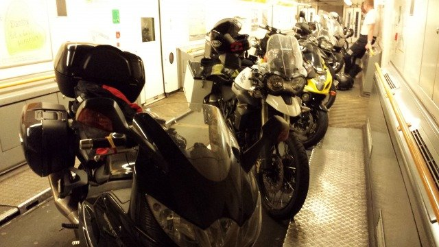
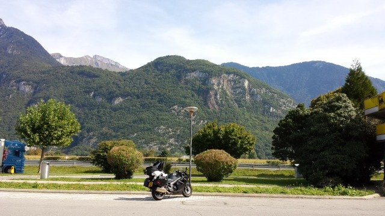
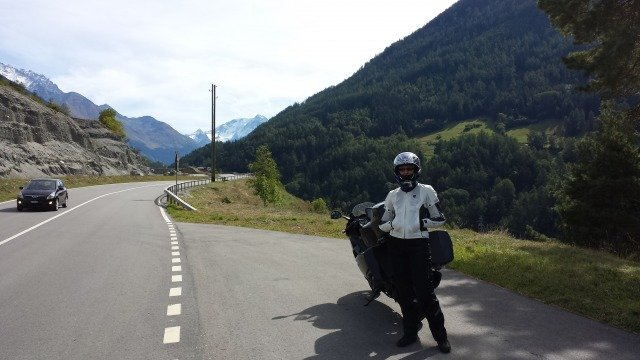
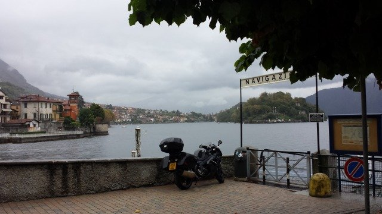
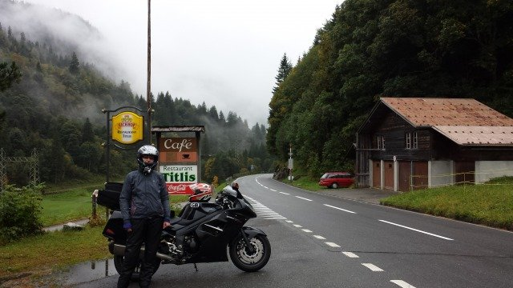

We finally did it and went motorcycle touring through Europe. Not one to just dip my toe in the water, I decided we'd kill two birds with one stone and visit some friends who live in Rome, almost 2,000km each way.
We took the tunnel over to France together. There we parted and I hooned it down through the low countries and Germany (got to love those Autobahns) and picked up the GF off the train in Switzerland. An absolutely stunning ride together through the Alps then down past Turin to Genoa. From there we headed down to Rome via Florence. We're both hooked now - can't wait for the next one!
    